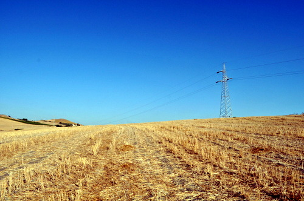
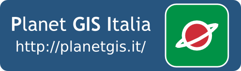
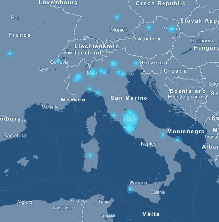
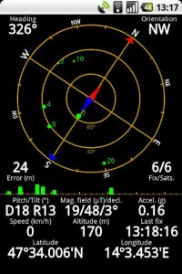
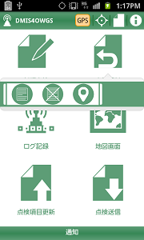

Archivio per la categoria ‘osgeo’
7 settembre, 2012 | di Andrea Borruso
Qualche settimana fa mi trovavo in campagna con i miei colleghi per svolgere un rilievo con minidrone su un traliccio dell’alta tensione. Prima di partire facciamo sempre una serie di verifiche sulla completezza e sullo stato delle attrezzature, così come individuiamo su mappa il luogo in cui recarci. Cosa fatta anche in quest’occasione.
Si trattava di un solo traliccio, di cui avevo una coppia di coordinate, che avevo (un po’ di fretta) visualizzato su Google Maps. L’obiettivo era quello di ricavare rapidamente il percorso per arrivare a destinazione e nel contempo “leggere” rapidamente il territorio sfruttando la vista Satellite e quella Rilievo. A cosa fatta mi sembrava di avere un quadro completo.

Arrivati sul luogo, inizio però a sudare freddo: in prossimità del punto in questione ci sono infatti non uno, ma quattro tralicci. Su quale eseguire il rilievo? Non avevamo infatti informazioni sulla precisione delle coordinate ed inoltre sulla base fotografica che avevo consultato prima di partire i 4 tralicci erano pressoché invisibili. Ho provato quindi a rileggere la base fotografica sul campo e – a ben guardare – qualche pixel grigio che rappresentava i tralicci lo vedevo, ma le mie coordinate non corrispondevano in modo inequivocabile con nessuno di questi. Ne potevamo scartare certamente due su quattro, ma non c’era da stare allegri.
Decido allora, per disperazione e senza alcuna vera idea alle spalle, di lanciare geopaparazzi sul mio smartphone Android, e di leggere la base OpenStreetMap in corrispondenza della mia coppia di coordinate. Ingrandisco un po’ la vista e ”Resta di stucco: è unbarbatrucco”, sulla base OSM sono presenti i tralicci dell’alta tensione. Guardo un po’ meglio e le mie coordinate corrispondono esattamente ad uno dei 4 tralicci (sono i 4 quadratini bianchi che ho cerchiato in rosso). A quel punto è tornata la serenità e ci siamo messi a lavorare!!

Sto un po’ semplificando, ma non romanzando. Quanto visto sulla base OpenStreetMap non ci dava infatti alcuna vera certezza, perché non avevamo informazioni su precisione ed accuratezza delle coordinate a disposizione e la corrispondenza del punto mappa con la base OSM poteva essere assolutamente casuale. Di più, non avevamo sul campo nemmeno il tempo di verificare la bontà del dato vettoriale riportato su OSM. Avevamo però finalmente un riferimento di massima confortante, da usare per fare altre verifiche che ci dessero la certezza dell’oggetto da rilevare.
OpenStreetMap è stato quindi uno degli strumenti di lavoro di quella giornata.
Tutto questo è avvenuto grazie a diversi fattori, resi possibili e/o in qualche modo alimentati dalla cultura e dalla comunità che sta dietro ad OSM e da alcuni dei pilastri su cui si poggiano il mondo dell’open-data e dell’open-source.
OpenStreetMap è infatti “un progetto che crea e fornisce dati cartografici [...] liberi e gratuiti a chiunque ne abbia bisogno. Il progetto è stato avviato perché la maggior parte delle mappe che si credono liberamente utilizzabili, hanno invece restrizioni legali otecniche al loro utilizzo e ciò ne impedisce l’uso per scopi produttivi, creativi o inattesi.”
Oggi sembra tutto un po’ scontato, ma è stato il prerequisito che mi ha fatto pensare che potesse avere un senso leggere la base OSM; soprattutto per ciò che riguarda l’inatteso. Che cosa ci fanno infatti i tralicci dell’alta tensione in una base cartografica globale e non specialistica?
Una delle cose belle di OpenStreetMap è la libertà di inserire teoricamente qualsiasi strato informativo. I grossi provider di web-mapping forniscono dei servizi eccellenti da molti punti vista, ma gli strati informativi (tolti quelli di base) sono pochi. Ci sono infatti numerose informazioni sulle attività commerciali sparse nel territorio, perché si tratta di servizi orientati al business e alla pubblicità (delle Pagine Gialle globali) ed è raro trovare layer che non producano per gli stessi fornitori – in modo diretto o indiretto – un tornaconto economico. SuOSM invece chiunque può aggiungere qualcosa: gli alberi delle strade di Berna, sapere dove sono le Antilopi allo zoo di Berlino o per l’appunto i tralicci dell’alta tensione in provincia di Trapani. Ma bisogna essere un po’ fissati!
Scherzo, ma quando ho visto apparire i tralicci sulla mappa mi sono chiesto cosa porti un utente a mappare cose come queste. La risposta non è semplice e le ragioni possono essere le più varie. Sicuramente in OpenStreetMap viene sollecitata l’attitudine ad occuparsi del proprio “quartiere”, inserendo ad esempio i giornalai, le panchine, i cinema, i monumenti, i giardini pubblici, i sensi di marcia delle strade, ecc., delle aeree che si conoscono meglio; è un po’ come riempire di fiori le aride aiuole sotto casa. Tutto questo quasi sempre con il desiderio di eguagliare o superare altri utenti. Alle volte è soltanto il piacere di derivare dei dati (ad esempio da una foto aerea): si inizia da un traliccio, ci si prende gusto e si continua perché è molto piacevole “disegnare il mondo” e buttare un sassolino (anche molto più di uno) nel più grosso progetto di cartografia partecipata al mondo. Gli utenti attivi di OpenStreetMap sono pochi rispetto al numero totale, ma quando si inizia a mappare è difficile non essere presi da istinti monomaniaci. Cartografare su OSM è addictive, provate.
Dovevo anche, per la mia serenità, verificare qualità ed accuratezza del dato di quello specifico traliccio. Il database di OpenStreetMap non solo è predisposto per archiviare numerose informazioni sui dati inseriti, ma consente a chiunque di accedervi e di consultare alcuni metadati, come il nome dell’autore. Ed allora scoprire ad esempio che il traliccio in questione era stato caricato da David Paleino è stato un attimo. Gli ho scritto per saperne di più, soprattutto sapere da dove avesse derivato i dati. Mi ha risposto immediatamente e con la disponibilità e gentilezza che conoscevo già, fornendo informazioni per me fondamentali. Tutto questo è stato possibile soltanto perché il dato era corredato da informazioni liberamente accessibili.
L’entusiasmo e la competenza di David da soli non sarebbero bastati per tracciare i tralicci. Ha potuto farlo perché aveva le foto aeree di base da cui ricavare queste informazioni, ed in particolare perché il S.I.T.R. Sicilia consente di derivare dati dalle ortofoto regionali fornite in WMS. Queste foto hanno una risoluzione di 0.25 m. ed i tralicci si vedono molto bene (vedi foto sotto). Senza cartografia di base è molto difficile produrre dati derivati, e per fortuna l’attenzione al tema degli opendata geografici e sempre maggiore. In questo campo il movimento OpenStreetMap è sicuramente tra i pionieri.

Ho voluto raccontarvi questa storia, per le sue dimensioni e per la sua concretezza. Si tratta infatti di qualcosa di piccolo, nulla rispetto (ad esempio) all’adozione di OSM da parte di foursquare, ma che mi ha cambiato una giornata di lavoro.
Ringrazio la comunità OpenStreetMap, in particolare
David, per ciò che fanno. Se volete un’idea di quello che è capace di fare un utente come lui, guardate le sue statistiche OSM
qui o ancora meglio la sua
Heat Map: senza parole!
Posted in osgeo, Strumenti | 5 Comments »
4 giugno, 2012 | di Andrea Borruso
 Nell’ultimo post ho scritto dell’imminente rilascio di una nuova versione di Geopaparazzi: il momento è arrivato e da oggi è possibile scaricare Geopaparazzi 3. Si tratta di una major release con diverse succose novità:
Nell’ultimo post ho scritto dell’imminente rilascio di una nuova versione di Geopaparazzi: il momento è arrivato e da oggi è possibile scaricare Geopaparazzi 3. Si tratta di una major release con diverse succose novità:
- map tiles personalizzate
- mappe vettoriali
- migliorie agli strumenti OpenStreetMap
- nuovi tag per la creazione di moduli più complessi e utili
- migliorie nella gestione dei bookmark con avvisi di prossimità agli stessi
- nuove feature di import e export
- esposizione di semplici API che consentono la gestione dei progetti sul web
Per tutti i dettagli vi rimando al post di Andrea ed al wiki del progetto.
Posted in osgeo, Strumenti | No Comments »
13 febbraio, 2012 | di Andrea Antonello
Abbiamo appena rilasciato Geopaparazzi 2.6.0 nel market.
Era un bel po’ che aspettavo questa versione, perché è piena di funzionalità che in diversi stavamo aspettando. Vediamone alcune.
1) Supporto Openstreetmap
Questa è molto probabilmente la funzionalità più importante di questa versione. Ora siamo in grado di creare punti di interesse di tipo OSM (Openstreetmap) e sincronizzarli con un account OSM online.
Il primo passo consiste nell’attivazione della funzionalità nelle impostazioni:

Una volta attivo, se viene riavviato geopaparazzi, all’utente verrà chiesto se vuole scaricare le definizioni dei tag OSM. Queste rappresentano la libreria di simboli e descrizioni del tag OSM utilizzati per le varie tipologie di punti.

La vista mappa mostrerà una piccola icona OSM sull sua destra. Se trascinata, l’applicazione mostra le categorie OSM disponibili:

Se si seleziona una delle categorie, vengono presentati i tag di tale categoria:

Selezionando uno specifico tag, all’utente si apre la sceda di compilazione delle proprietà del tag.

Dalla vista delle categorie è possibile sincronizzare tutti i punti di tipo OSM con il proprio account OSM online. All’utente verrà chiesto di inserire una descrizione per il set di modifiche che sta caricando:

Se nei settaggi utente e password sono state inserite nel modo giusto, geopaparazzi si connetterà a un servizio WPS scritto e reso diponibile da Luca Delucchi. Il WPS caricherà i punti sull’account OSM definito nei settaggi. Ringraziamo Luca, che ha dato grande supporto nel capire le tecnicità in gioco sul lato OSM. Inoltre è stato lui a scrivere il servizio WPS e renderlo disponibile a tutti gli utenti di geopaparazzi e infine ha creato tutte le icone e definizioni dei tag OSM.
2) supporto OGC GeoSMS
Questa versione di geopaparazzi supporta le specifiche OGC GeoSMS. La funzionalità è attiva sia in uscita che per GeoSMS entranti.
Le impostazioni SMS permettono di attivare ”enable sms catcher”, che gestisce i GeoSMS entranti, mentre l’impostazione del “panic number” verrà usato per spedire messaggi nel formato GeoSMS.

Vediamo prima la spedizione dei GeoSMS. Geopaparazzi nella parte bassa della schermata principale ha una “panic bar”. Da li un utente può spedire un messaggio di richiesta di aiuto. Tale pulsante spedisce un messaggio contenente la posizione assieme ad una richiesta di aiuto secondo le specifiche OGC GeoSMS. Vi è anche un secondo pulsante che può essere utilizzato per spedire messaggi personalizzati. All’utente verrà proposto di inserire un testo da aggiungere al GeoSMS.

Cosa succede quando al telefono arriva un messaggio nel formato GeoSMS? Se la funzionalità è stata attivata nelle impostazioni, geopaparazzi elaborerà il messaggio entrante riconoscendone l’eventuale formato GeoSMS. Notificherà quindi all’utente l’arrivo di tale messaggio:

Dalla notifica sarà poi possibile aprire il GeoSMS con una delle applicazioni in grado di gestire l’infomazione ivi contenuta.

Quindi, selezionando al notifica:

Aprendo il messaggio con una delle applicazioni disponibili mostra che stavamo preparando alcuni screenshot per una presentazione al meeting italiano di utenti GRASS e GFOSS di Trieste:

3) realtà aumentata con mixare
In questa versione abbiamo aggiunto la possibilità di visualizzare i punti di interesse contenuti nella attuale vista di geopaparazzi in mixare. Questa funzionalità è stata descritta in passato in questo articolo.
Il punto di ingresso per la funzionalità è il menu principale della vista mappa:

4) creazione di un progetto nuovo

La creazione di un nuovo progetto ha sempre seguito un workflow poco naturale. Finalmente ora funziona come dovrebbe: all’utente viene chiesto un nome per il nuovo progetto, geopaparazzi crea tale progetto e lo carica.

5) i favoriti
Una cosa che a nostro avviso è sempre mancata, è un modo semplice e veloce per aggiungere dei punti favoriti. Abbiamo quindi aggiunto la possibilità di caricare i punti definiti in un file bookmarks.csv che dovrà essere copiato nella cartella di progetto (di solito geopaprazzi). Se il file è presente e se contiene i punti nella forma
Hotel Trieste, 45.642043,13.780791
Grassday Trieste,45.65844,13.79320
allora tali punti verranno caricati come favoriti.
Questa novità ha avuto come risultato già in fase di testing che ci si trovasse con un gran numero di favoriti e quindi con la necessità di poterli in qualche modo filtrare. E’ stata quindi aggiunto un campo di testo per semplificare la ricerca dei favoriti. Il testo ivi inserito verrà utilizzato per filtrare la lista di favoriti:

6) centra sul gps
Dopo aver rischiato una guida pericolosa per il solo motivo di spostare la mappa per tenere la posizione attuale al centro dello schermo, abbiamo aggiunto la funzionalità di centratura automatica della posizione gps. E’ possibile attivare tale funzionalità nelle impostazioni del gps:

7) grafici dei percorsi migliorati e zoom a selezione
Per ricordare questa funzionalità, ne avevamo già parlato qui.
8) osmdroid non disintegra più le mappe
Alcuni sviluppatori del progetto osmdroid (il motore che geopaparazzi usa per la visualizzazione delle mappe) hanno finalmente risolto il baco per il quale in particolari condizioni di mancanza di memoria, venivano cancellate tutte le mappe dal disco. Questo è stato uno dei bachi peggiori, visto che a diversi utenti era successo di scaricarsi le mappe per un rilievo su una zona e di trovarsi poi in montagna, offline e senza una mappa a disposizione. Il problema è stato finalmente risolto!!
9) la possibilità di usare la posizione calcolata dalla rete
Ci è stato chiesto diverse volte di attivare la possibilità di sfruttare la rete per la definizione della posizione. Anche se tale posizione può risultare un po’ fuorviante , abbiamo deciso di aggiungere tale funzionalità, che può essere attivata nelle impostazioni del gps. Non è possibile aggiungere note da gps in questa modalità, visto che la posizione può essere sbagliata anche di diverse centinaia di metri. E’ comunque possibile vedere la propria posizione nella vista mappa e inserire note basandosi sulla mappa.
Questa versione nasconde un cambiamento molto importante dal punto di vista tecnico. Il progetto geopaparazzi è stato diviso in due per meglio supportare la riusabilità dei componenti. Molte delle funzionalità sono state messe in una libreria separata. Questo progetto può essere utilizzato per costruire in modo veloce semplici applicazioni.
Abbiamo deciso di rilasciare questa versione, perchè gli srtumenti OSM hanno bisogno di testing e anche la questione della libreria potrebbe avere bisogno di altro testing. Anche la documentazione avrà bisogno di un’aggiornamento. Come al solito ogni aiuto è ben accetto! 
Installatevi l’applicazione dal market o scaricatela dalla area di download del progetto. Giocateci, testatela, mandateci commenti e bachi. Se avete domande, venite a trovarci nella mailinglist.
Ma sopratutto, godetevela!
[For an English version of this article, click here]
Posted in osgeo, Strumenti | 11 Comments »
31 dicembre, 2011 | di Andrea Borruso
Introduzione
Anni fa ho creato un aggregatore di feed RSS, con l’obiettivo di raccogliere le notizie provenienti dai blog italiani a tema GIS. L’ho fatto come “utilizzatore finale” (giuro che non è satira politica), per avere una fonte unica – e in particolare un solo feed RSS – da cui leggere notizie a tema. Gli associai anche un nome di fantasia: Blog GIS Italia.
Successivamente, quando TANTO era ancora un blog monoautore, l’ho inserito nel flusso di notizie di una delle colonne laterali del blog, e nel tempo ne ho curato (malamente) la manutenzione, l’aggiornamento del “motore” e quello delle fonti.
La sua ultima versione – che con un tocco di presunzione avevo classificato come “0.3” – era basata su Yahoo! Pipes e ne sfruttava pochissime funzioni (soltanto un po’ di regex sul titolo delle sorgenti degli RSS).
E’ uno strumento che mi è sempre stato utile, su cui desideravo investire un po’ di nuove risorse e dare finalmente vita alla versione “0.4”. Il momento è arrivato e nasce oggi, come progetto della redazione di TANTO, “Planet GIS Italia 0.4” (ebbene sì un nome un po’ diverso).

Planet GIS Italia 0.4
E’ una finestra sul mondo delle tecnologie e della cultura geospaziali, un punto di accesso e di scoperta centralizzato. Nulla di nuovo.
Esistono infatti già diversi aggregatori legati al mondo dei GIS. Tre esempi noti:
- Planet OSGeo, is a window into the world, work and lives of OSGeo members, hackers and contributors;
- Planet Geospatial, is a window into the world of geospatial technology;
- geoblogger.eu, is a feed aggregator of European geo-blogs and should serve as index and leverage networking for geo-minded people in that region.
Il nome è cambiato perché sono cambiati i criteri di selezione: ci sembrava riduttivo quello di aggregare “soltanto” le notizie/post/articoli provenienti dal mondo dei blog. Sono la fonte principale, ma non sono l’unica, né sempre la più ricca.
Ogni aggregatore sottostà a dei criteri di selezione, e quello principale di Planet GIS Italia (da qui in poi PGI) è “spaziale”: i contributi raccolti vengono dal nostro Paese (non sempre in senso stretto). Un altro criterio è ovviamente quello tematico.
Il risultato è un sito snello, un piccolo “televideo” tematico, che per scelta editoriale non ingloba interamente i post originali, ma soltanto una piccola parte.
Una piccola/grande novità di questo aggregatore, che lo differenzia ad esempio dai tre famosi di cui sopra, è il suo essere “geografico” non soltanto per i temi trattati, ma anche nel suo “cuore”. Infatti sugli elementi dei feed RSS sorgenti viene eseguita una procedura di geoparsing, con l’obiettivo di estrarre le informazioni spaziali eventualmente presenti in essi. Si tratta essenzialmente di una “caccia al
toponimo” che (se va a buon fine) consente di arricchire il dato originale con un’informazione che inizialmente (quasi sempre) non era presente: la posizione sulla Terra.
Uno degli output è ovviamente una mappa, in cui vengono raccolti – ed eventualmente aggregati in cluster – gli elementi archiviati in PGI.

Non crediamo però che l’elemento geografico sia il più importante. Ci piace infatti pensare che questo spazio possa essere soprattutto una fonte di scoperta e un ponte tra persone, esperienze e professionalità. Nel lavoro di redazione, nel raccogliere e proporre gli elementi da aggregare qui, noi stessi abbiamo letto per la prima volta dell’esistenza di alcuni siti, abbiamo appreso nuovi concetti e siamo entrati in contatto con delle belle persone.
Come funziona Planet GIS Italia
Planet GIS Italia è basato su MANAGING NEWS, un motore open source per l’aggregazione di notizie con le seguenti caratteristiche di base:
- Aggrega da sorgenti RSS/Atom a scelta
- Mostra le notizie come lista o su una mappa
- Consente di eseguire delle ricerche
- Da la possibilità di raggruppare le notizie in canali
- Esegue il geotagging delle notizie
- Espone i contenuti raccolti via RSS (e GeoRSS)
- Consente di condividere i contenuti su Facebook, Twitter o per email
Managing News è un prodotto (da febbraio del 2011) di Phase2 Technology, basato a sua volta su una personalizzazione di alto livello di Drupal 6, con alle spalle moduli che ci piacciono tanto, tra i quali OpenLayers. Il gruppo che ha originariamente sviluppato il prodotto è quello (fantastico) di Development Seed (per inciso una delle più belle homepage di tutti i tempi), e se ne ha evidenza nell’uso di MapBox come layer di base dell’interfaccia cartografica.
Il servizio di geoparsing è basato su Yahoo! Placemaker, un servizio che consente di sviluppare applicazioni location-aware, identificando i luoghi presenti in contenuti non strutturati (feed, pagine web, news, aggiornamenti di stato, ecc.) e restituendo i metadati geografici correlati.
Ad ogni luogo individuato viene associato un identificatore univoco WOEID (Where On Earth Identifiers), un tipo (una categorizzazione di base, per definire ad esempio se il luogo è una città o uno stato), un nome “formale” ed una coppia di coordinate.
Immaginiamo ad esempio che su su Planet GIS Italia venga raccolto il seguente contributo:
“Opendata, donazioni, Baviera: conti e racconti”
Il motore di PGI lo invia a Yahoo! Placemaker che lo processa e gli restituisce (se viene individuato un luogo) queste informazioni:
- woeId : 2345482 → gli associa un ID
- type : State → lo classifica
- name : Bavaria, DE → gli associa un nome formale
- centroid → ne restituisce la posizione del centroide
- latitude : 48.9172
- longitude : 11.408
Questo è l’output completo che viene restituito. Se volete “giocarci” un po’, lo strumento più comodo e didattico è sicuramente la console YQL. Da questo link potrete aprirla precaricata con una query sintatticamente corretta e basata sulla stringa di sopra (una volta aperta la pagina, dovrete fare click sul tasto “TEST” che si trova sotto la query).
Se il processing geografico restituisce valori, questi vengono associati agli elementi dei feed in due modalità principali:
- l’associazione di un tag con il nome del/i toponimo/i individuati (vedi immagine sottostante)
- l’associazione di una (o più) coppia di coordinate in modo da poter rappresentare la notizia su una mappa

Le notizie per le quali non è individuato un luogo vengono inserite comunque nel sito, ma non potranno essere mappate. Se le fonti originarie contengono però nativamente delle informazioni geografiche in forma di GeoRSS, queste vengono utilizzate automaticamente per posizionare la notizia sulla mappa, anche nel caso in cui il geoprocessing non abbia prodotto risultati.
Con in nomi dei luoghi e con le lingue le cose però non sono così facili. Perché c’è Prato e anche prato. Grazie a PGI ho scoperto anche che c’è una destinazione di viaggio a Hong Kong che da molto fastidio all’analisi dei testi italiani: “Che Ha”. Ma mi fermo perché il tema è molto specialistico, ed è necessaria un’altra penna e un altro post.
Per familiarizzare con l’interfaccia del sito abbiamo preparato una breve videoguida, che ne illustra le caratteristiche principali.

Sui feed
Se fai una indagine su tre classi dell’ultimo anno delle superiori, su 70 studenti di 18 anni nessuno sa cos’è Google Reader, 2 si informano in rete sui siti dei grandi giornali, e 70, cioé tutti usano Facebook.[1]
Un po’ tutti noi di TANTO siamo Feed RSS/Atom dipendenti. Se ne può “fare uso” nelle modalità più svariate, e l’elenco delle ricette che trovate sul meraviglioso ifttt ne è una prova. Purtroppo sono forse ancora visti (e utilizzati) come strumento di nicchia, mentre dovrebbero essere quasi per definizione uno strumento “pop”.
Anche i colossi dell’informatica ci mettono lo zampino, e in browser come Mozilla Firefox e Google Chrome il tasto per iscriversi ad un feed non fa parte della dotazione standard, ma è attivabile soltanto tramite un’estensione.
Un po’ di cura dovremmo mettercela anche noi che creiamo e diffondiamo RSS: i feed di TANTO ad esempio non superano ancora la validazione W3C. Costruendo questo spazio ho constatato anche che alcuni grossi siti del settore pubblicano i loro RSS con un corredo povero di informazioni (senza alcun tag e/o categorie).
Sorpresa e serendipità
If we’re going to encourage more innovation, it’s not enough for us to just dig in and work harder. We also need to encourage surprise and serendipity. We need to play each other’s instruments.[2]
Due delle emozioni tipiche nella quotidiana lettura dei feed RSS/Atom, sono per noi della redazione di TANTO lo spunto per farvi e farci dei grandi auguri per l’anno che verrà. Sorpresa e serendipità non bastano da soli a rendere un anno migliore di un altro, ma possono essere una delle scintille per fare partire quelle reazioni a catena che nel 2011 non si sono innescate.
Buon anno a tutti!
Posted in osgeo, Strumenti | 7 Comments »
7 novembre, 2011 | di Andrea Antonello
 Unce upon a time there was a hot summer and dark room. And there was a lazy nerdy Sunday morning. I remember quite well that weekend.
Unce upon a time there was a hot summer and dark room. And there was a lazy nerdy Sunday morning. I remember quite well that weekend.
The time was up to try to develop something on Android. In the past I had tried to develop applications on Zaurus, on Dell Axim, on some Nokia smartphone, but the results had been disappointing every time. There had to be something easier, where one could throw his ideas and make simple applications out of it… in one weekend.
The nerdy Sunday, wakeup call at 6, checking emails with coffe’ and cookies, seemed to be inspiring. A couple of days before an email had arrived about a new book, available in “review-reading” mode as pdf version: Unlocking Android, a developer’s guide by Ableson et alter. I decided to give it a possibility.
Well, I found the book so easy to read through, that I gave the first application a try. I really wanted to create a lightweight application that would help out in field surveys and would have those features, that the tablet pc field mapping application didn’t have. Above all the possibility to record the orientation of the pictures taken during the survey, so that they would show the direction of the snapshot when imported on a map. And I really liked the idea of having a mapping device always in my pocket. The motto has always been: “Gather as much information as you can. Always. The GIS will then help you to sort it out.”
That Sunday experiment went way better than I had ever hoped, by the evening I had great satisfaction with my simple, new and most of all GPS logging application. It was already able to take text notes and track lines. I got really excited about the possibilities to create a small version of BeeGIS… well, at that point I knew the time was up for Geopaparazzi.
From that moment on things went quite smooth. We started developing a simple OpenStreetMap based view, we created an import tool for Geopaparazzi in BeeGIS. We were using it in our daily job, and that was simply awesome. As we usually do at HydroloGIS we open sourced the application and published it on the market, in the hope that people would buy it and through that act support our other open source projects: JGrasstools, JGrass, BeeGIS and uDig.

The first Geopaparazzi
The thing we were most proud of, was that it would handle shooting direction:

The compass tracks the picture shooting direction, when the user keeps the phone in "taking picture" mode.
which, once imported into BeeGIS, would result in geonotes containing the picture and showing through a small arrow the direction in which the photo had been taken:

Geopaparazzi survey data imported into BeeGIS. The small arrows show the direction of the snapshot, the note itself contains the image.
As time passes by and as open source software works, one starts to exploit components other teams are specialized in.
So at some point Geopaparazzi decided to remove the compass view to present the much more user friendly dashboard. The android system makes it very easy to call views from other applications. geopaparazzi therefore chose to present a compass button that calls the compass view from the Status GPS project, which is freely available in the market.
The Status GPS compass view
At that point Geopaparazzi 2 was released, which brought a new, more userfriendly dashboard view:

The main view of Geopaparazzi 2
From the beginning Geopaparazzi only wanted to deal with data collection, which is why with the time the possibilities to describe the data to collect were enhanced. The new form based tags were introduces, through which it is possible to describe the data structure as forms that appear as tag buttons:

The form file description is loaded as a set of buttons that call the actual form
Once the button is pushed, the form is generated from a user created description:

A form, generated on the fly from a user defined text
Geopaparazzi 2 also brought the integration with the osmdroid project, a project that supplies a map view that caches OSM map tiles that can be accessed also in offline mode. This gave the possibility to enhance a bit the usability of the map view, also adding the bookmarks facility:

The osmdroid based map view, with Geopaparazzi's measure tool, bookmarks and notes tools
That more or less brings us to where we are now. Some interest has grown around Geopaparazzi and that makes us very happy.
The Osaka Water General Service together with the Osaka University has adapted it to use it for the collection of information about water-supply infrastructure to promote post-disaster recovery for water supply under the guidance of Venkatesh Raghavan.
The Japanese localized Geopaparazzi adaption used in the Disaster Management Information System of the city of Osaka
We worked on a customized version of Geopaparazzi to keep waste management information uptodate. Through the trashmapper it is possible to sample and update information out in the field and then syncronize the data with a central database/webgis.
Since in this project the new generation tablets are being used, we got to tweak it for better user experience on tablet screens:

The TrashMapper application that helps collecting data about waste management
Arrived to that point, it was about time to move to the next level. Geopaparazzi has always been a free and open source application. It was sold in the android market but the code has always been accessible. What we want to achieve now that it is a stable product, is to attract some developers to cooperate on the project and enhance its functionalities. That is why from today on Geopaparazzi can be found in the market for free. From today on it is not only free as in speech, but also as in beer.
A few final considerations: the new generation tablets are more or less like pcs and maybe the idea to avoid too much mapping capabilities in Geopaparazzi might be a decision that it is time to review. Maybe instead it is time Geopaparazzi starts to slowly take over the job of old and heavy BeeGIS, with new data and connectivity functionalties and mapping capabilities. The doors are open, even if the main paradigma has to be kept strickt in mind: the tools needs to stay as simple and usable as possible. If you are interested to contribute, feel free to stop by at our mailinglist and have a chat with us. If you want to try it out, simply access the market and search for geopaparazzi.
Posted in osgeo, Strumenti | No Comments »


{kind=link}
{kind=link}